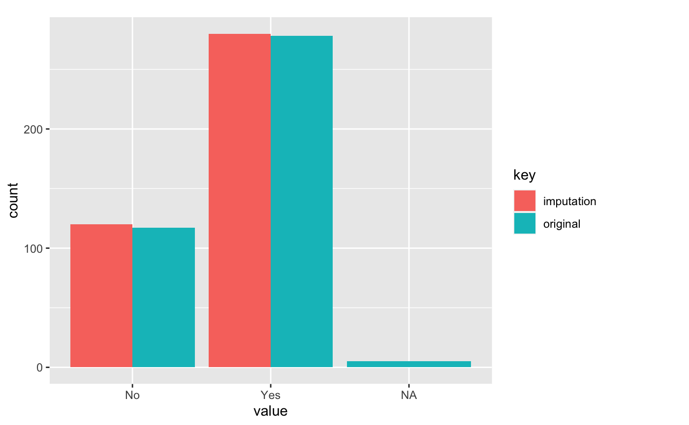
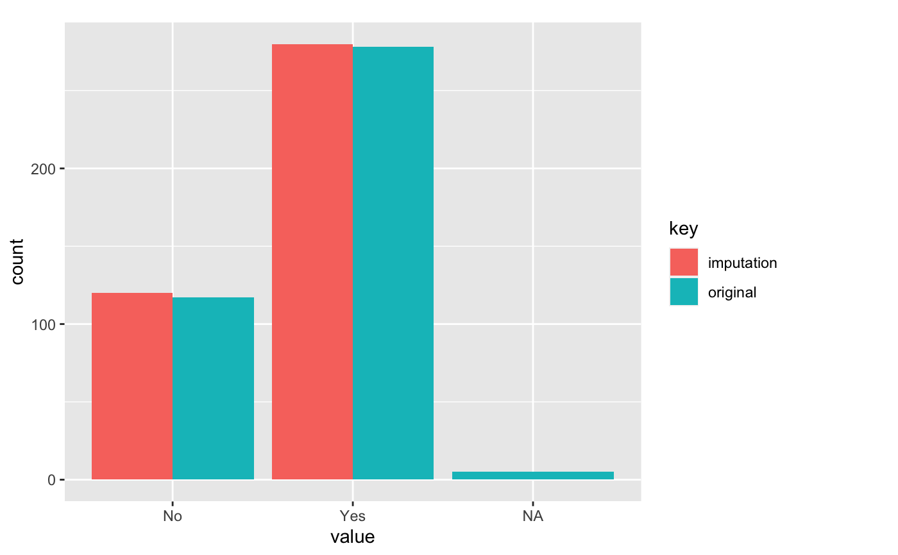

print and summary method for "imputation" class.
# S3 method for imputation
summary(object, ...)Arguments
- object
an object of class "imputation", usually, a result of a call to imputate_na() or imputate_outlier().
- ...
further arguments passed to or from other methods.
Details
summary.imputation() tries to be smart about formatting two kinds of imputation.
See also
imputate_na, imputate_outlier, summary.imputation.
Examples
# \donttest{
# Generate data for the example
heartfailure2 <- heartfailure
heartfailure2[sample(seq(NROW(heartfailure2)), 20), "platelets"] <- NA
heartfailure2[sample(seq(NROW(heartfailure2)), 5), "smoking"] <- NA
# Impute missing values -----------------------------
# If the variable of interest is a numerical variables
# Require rpart package
# platelets <- imputate_na(heartfailure2, platelets, death_event, method = "rpart")
# platelets
# summary(platelets)
# plot(platelets)
# If the variable of interest is a categorical variables
smoking <- imputate_na(heartfailure2, smoking, death_event, method = "mice")
#>
#> iter imp variable
#> 1 1 platelets smoking
#> 1 2 platelets smoking
#> 1 3 platelets smoking
#> 1 4 platelets smoking
#> 1 5 platelets smoking
#> 2 1 platelets smoking
#> 2 2 platelets smoking
#> 2 3 platelets smoking
#> 2 4 platelets smoking
#> 2 5 platelets smoking
#> 3 1 platelets smoking
#> 3 2 platelets smoking
#> 3 3 platelets smoking
#> 3 4 platelets smoking
#> 3 5 platelets smoking
#> 4 1 platelets smoking
#> 4 2 platelets smoking
#> 4 3 platelets smoking
#> 4 4 platelets smoking
#> 4 5 platelets smoking
#> 5 1 platelets smoking
#> 5 2 platelets smoking
#> 5 3 platelets smoking
#> 5 4 platelets smoking
#> 5 5 platelets smoking
smoking
#> [1] No No Yes No No Yes No Yes No Yes Yes Yes No No No No No No
#> [19] No No No No Yes No No Yes No Yes Yes Yes No No No No No No
#> [37] No No No No Yes Yes Yes No No Yes No Yes No No No No No No
#> [55] Yes No Yes Yes Yes Yes No No Yes No No Yes No Yes No No Yes Yes
#> [73] Yes Yes Yes Yes Yes No Yes No No Yes No No No No No No No No
#> [91] Yes No No No No No No No No Yes No No Yes Yes No Yes No No
#> [109] Yes Yes Yes Yes No No No No No No No No Yes No No No No No
#> [127] No No Yes No Yes No No Yes Yes No No No No No No No No No
#> [145] Yes Yes Yes No No No No No Yes Yes No No No Yes No Yes No Yes
#> [163] Yes No No No Yes No No No Yes Yes Yes No Yes Yes Yes No No Yes
#> [181] No Yes Yes No Yes No No No No No No No No Yes No No No No
#> [199] No Yes No No No Yes Yes No No No No No Yes Yes Yes No No No
#> [217] No No No No No Yes Yes No No No Yes No No No No Yes No Yes
#> [235] Yes No No No No Yes No Yes Yes No No No No No Yes No No No
#> [253] No No No Yes No No No Yes No No No No No Yes Yes No No No
#> [271] Yes No No No Yes No No No No No No Yes Yes Yes No No No No
#> [289] No No No No Yes Yes Yes No No Yes Yes
#> attr(,"var_type")
#> [1] categorical
#> attr(,"method")
#> [1] mice
#> attr(,"na_pos")
#> [1] 29 100 144 202 233
#> attr(,"seed")
#> [1] 96242
#> attr(,"type")
#> [1] missing values
#> attr(,"message")
#> [1] complete imputation
#> attr(,"success")
#> [1] TRUE
#> Levels: No Yes
summary(smoking)
#> * Impute missing values based on Multivariate Imputation by Chained Equations
#> - method : mice
#> - random seed : 96242
#>
#> * Information of Imputation (before vs after)
#> original imputation original_percent imputation_percent
#> No 198 201 66.22 67.22
#> Yes 96 98 32.11 32.78
#> <NA> 5 0 1.67 0.00
plot(smoking)
 # Impute outliers ----------------------------------
# If the variable of interest is a numerical variable
platelets <- imputate_outlier(heartfailure2, platelets, method = "capping")
platelets
#> [1] 265000 263358 162000 210000 327000 204000 127000 418400 263358 388000
#> [11] 368000 253000 136000 276000 427000 129700 262000 166000 237000 87000
#> [21] 276000 297000 289000 368000 263358 149000 196000 284000 153000 200000
#> [31] 263358 360000 NA 302000 NA 228000 226000 321000 305000 329000
#> [41] NA 153000 185000 218000 194000 310000 271000 418400 140000 395000
#> [51] 166000 418000 263358 351000 255000 418400 223000 216000 319000 254000
#> [61] 390000 216000 NA 385000 263358 119000 213000 274000 244000 NA
#> [71] 374000 122000 243000 149000 NA 204000 317000 NA 283000 324000
#> [81] 293000 263358 196000 172000 302000 406000 173000 NA 235000 181000
#> [91] 249000 297000 263358 210000 327000 219000 254000 255000 318000 221000
#> [101] 298000 263358 149000 226000 286000 418400 263000 226000 304000 418400
#> [111] 306000 228000 252000 351000 328000 164000 NA 418400 203000 263358
#> [121] 210000 162000 228000 127000 217000 237000 271000 300000 267000 227000
#> [131] 249000 250000 263358 295000 231000 263358 172000 305000 221000 211000
#> [141] 263358 348000 329000 229000 338000 266000 218000 242000 225000 228000
#> [151] 235000 244000 184000 263358 235000 194000 277000 262000 235000 362000
#> [161] 242000 174000 418400 129700 334000 192000 220000 129700 270000 NA
#> [171] 263358 325000 NA 189000 281000 337000 105000 132000 267000 279000
#> [181] 303000 221000 265000 224000 219000 389000 153000 365000 201000 NA
#> [191] 350000 309000 NA 160000 126000 223000 263358 259000 279000 263358
#> [201] 129700 377000 220000 212000 NA 362000 226000 186000 283000 268000
#> [211] 389000 147000 418400 244000 290000 203000 358000 151000 271000 371000
#> [221] 263358 194000 365000 130000 418400 265000 189000 141000 237000 274000
#> [231] 129700 NA 255000 330000 305000 406000 248000 173000 NA 263358
#> [241] 418400 249000 255000 220000 264000 282000 314000 246000 301000 223000
#> [251] 404000 231000 274000 236000 263358 334000 294000 253000 233000 308000
#> [261] 203000 283000 198000 NA 147000 362000 263358 133000 302000 222000
#> [271] 263358 221000 NA 189000 150000 422000 327000 129700 232000 418400
#> [281] 241000 129700 215000 263358 279000 336000 279000 418400 263358 390000
#> [291] 222000 NA 382000 179000 155000 270000 NA 140000 395000
#> attr(,"method")
#> [1] "capping"
#> attr(,"var_type")
#> [1] "numerical"
#> attr(,"outlier_pos")
#> [1] 8 16 48 56 106 110 118 163 164 168 201 213 225 231 241 278 280 282 288
#> attr(,"outliers")
#> [1] 454000 47000 451000 461000 621000 850000 507000 448000 75000 70000
#> [11] 73000 481000 504000 62000 533000 25100 451000 51000 543000
#> attr(,"type")
#> [1] "outliers"
#> attr(,"message")
#> [1] "complete imputation"
#> attr(,"success")
#> [1] TRUE
#> attr(,"class")
#> [1] "imputation" "numeric"
summary(platelets)
#> Impute outliers with capping
#>
#> * Information of Imputation (before vs after)
#> Original Imputation
#> described_variables "value" "value"
#> n "279" "279"
#> na "20" "20"
#> mean "262049.1" "259259.1"
#> sd "95149.55" "77280.97"
#> se_mean "5696.454" "4626.691"
#> IQR "91000" "91000"
#> skewness "1.245854" "0.274777"
#> kurtosis " 5.601284" "-0.383034"
#> p00 "25100" "87000"
#> p01 " 59580" "121340"
#> p05 "129700" "129970"
#> p10 "152600" "152600"
#> p20 "196000" "196000"
#> p25 "212500" "212500"
#> p30 "221000" "221000"
#> p40 "236200" "236200"
#> p50 "262000" "262000"
#> p60 "265000" "265000"
#> p70 "287800" "287800"
#> p75 "303500" "303500"
#> p80 "324400" "324400"
#> p90 "374600" "374600"
#> p95 "418400" "418040"
#> p99 "535200" "418400"
#> p100 "850000" "427000"
plot(platelets)

# }
# Impute outliers ----------------------------------
# If the variable of interest is a numerical variable
platelets <- imputate_outlier(heartfailure2, platelets, method = "capping")
platelets
#> [1] 265000 263358 162000 210000 327000 204000 127000 418400 263358 388000
#> [11] 368000 253000 136000 276000 427000 129700 262000 166000 237000 87000
#> [21] 276000 297000 289000 368000 263358 149000 196000 284000 153000 200000
#> [31] 263358 360000 NA 302000 NA 228000 226000 321000 305000 329000
#> [41] NA 153000 185000 218000 194000 310000 271000 418400 140000 395000
#> [51] 166000 418000 263358 351000 255000 418400 223000 216000 319000 254000
#> [61] 390000 216000 NA 385000 263358 119000 213000 274000 244000 NA
#> [71] 374000 122000 243000 149000 NA 204000 317000 NA 283000 324000
#> [81] 293000 263358 196000 172000 302000 406000 173000 NA 235000 181000
#> [91] 249000 297000 263358 210000 327000 219000 254000 255000 318000 221000
#> [101] 298000 263358 149000 226000 286000 418400 263000 226000 304000 418400
#> [111] 306000 228000 252000 351000 328000 164000 NA 418400 203000 263358
#> [121] 210000 162000 228000 127000 217000 237000 271000 300000 267000 227000
#> [131] 249000 250000 263358 295000 231000 263358 172000 305000 221000 211000
#> [141] 263358 348000 329000 229000 338000 266000 218000 242000 225000 228000
#> [151] 235000 244000 184000 263358 235000 194000 277000 262000 235000 362000
#> [161] 242000 174000 418400 129700 334000 192000 220000 129700 270000 NA
#> [171] 263358 325000 NA 189000 281000 337000 105000 132000 267000 279000
#> [181] 303000 221000 265000 224000 219000 389000 153000 365000 201000 NA
#> [191] 350000 309000 NA 160000 126000 223000 263358 259000 279000 263358
#> [201] 129700 377000 220000 212000 NA 362000 226000 186000 283000 268000
#> [211] 389000 147000 418400 244000 290000 203000 358000 151000 271000 371000
#> [221] 263358 194000 365000 130000 418400 265000 189000 141000 237000 274000
#> [231] 129700 NA 255000 330000 305000 406000 248000 173000 NA 263358
#> [241] 418400 249000 255000 220000 264000 282000 314000 246000 301000 223000
#> [251] 404000 231000 274000 236000 263358 334000 294000 253000 233000 308000
#> [261] 203000 283000 198000 NA 147000 362000 263358 133000 302000 222000
#> [271] 263358 221000 NA 189000 150000 422000 327000 129700 232000 418400
#> [281] 241000 129700 215000 263358 279000 336000 279000 418400 263358 390000
#> [291] 222000 NA 382000 179000 155000 270000 NA 140000 395000
#> attr(,"method")
#> [1] "capping"
#> attr(,"var_type")
#> [1] "numerical"
#> attr(,"outlier_pos")
#> [1] 8 16 48 56 106 110 118 163 164 168 201 213 225 231 241 278 280 282 288
#> attr(,"outliers")
#> [1] 454000 47000 451000 461000 621000 850000 507000 448000 75000 70000
#> [11] 73000 481000 504000 62000 533000 25100 451000 51000 543000
#> attr(,"type")
#> [1] "outliers"
#> attr(,"message")
#> [1] "complete imputation"
#> attr(,"success")
#> [1] TRUE
#> attr(,"class")
#> [1] "imputation" "numeric"
summary(platelets)
#> Impute outliers with capping
#>
#> * Information of Imputation (before vs after)
#> Original Imputation
#> described_variables "value" "value"
#> n "279" "279"
#> na "20" "20"
#> mean "262049.1" "259259.1"
#> sd "95149.55" "77280.97"
#> se_mean "5696.454" "4626.691"
#> IQR "91000" "91000"
#> skewness "1.245854" "0.274777"
#> kurtosis " 5.601284" "-0.383034"
#> p00 "25100" "87000"
#> p01 " 59580" "121340"
#> p05 "129700" "129970"
#> p10 "152600" "152600"
#> p20 "196000" "196000"
#> p25 "212500" "212500"
#> p30 "221000" "221000"
#> p40 "236200" "236200"
#> p50 "262000" "262000"
#> p60 "265000" "265000"
#> p70 "287800" "287800"
#> p75 "303500" "303500"
#> p80 "324400" "324400"
#> p90 "374600" "374600"
#> p95 "418400" "418040"
#> p99 "535200" "418400"
#> p100 "850000" "427000"
plot(platelets)

# }